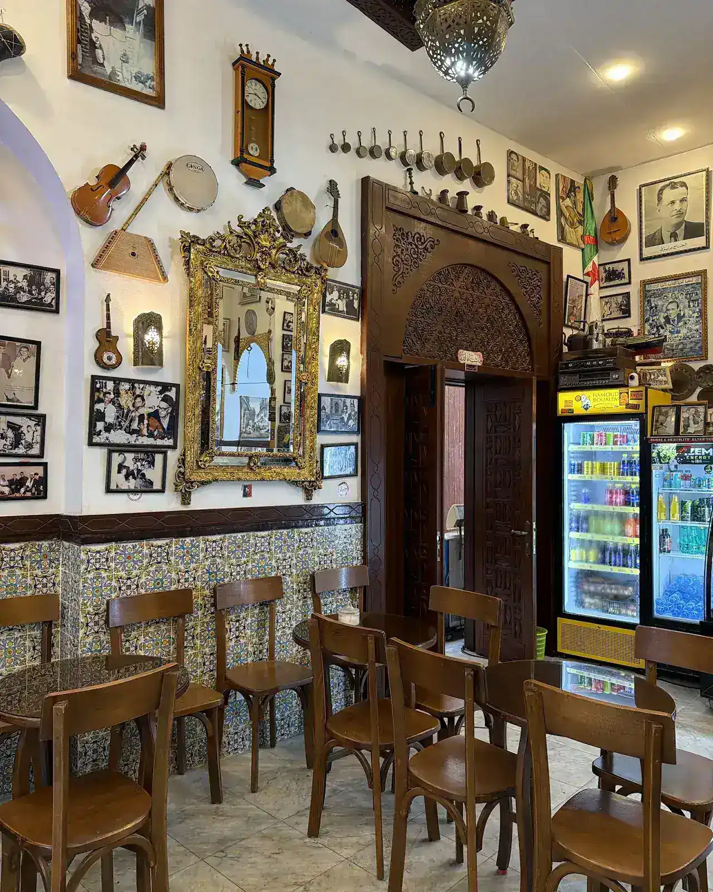
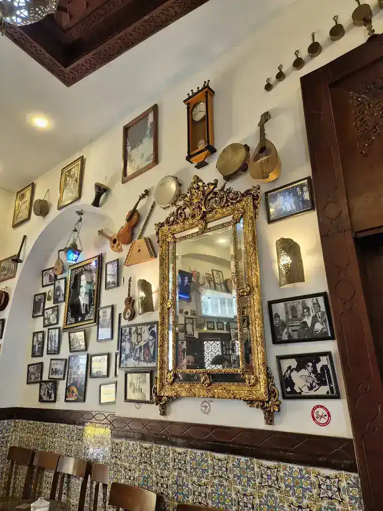
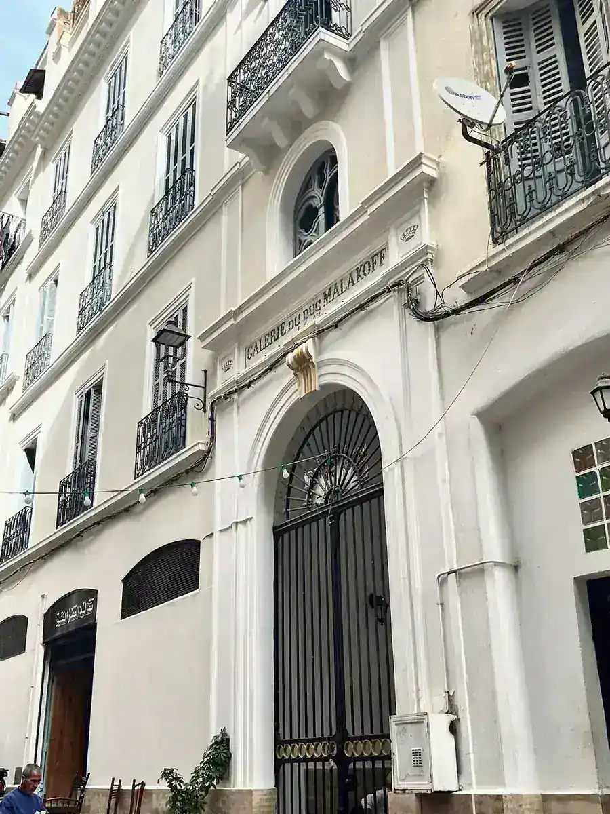
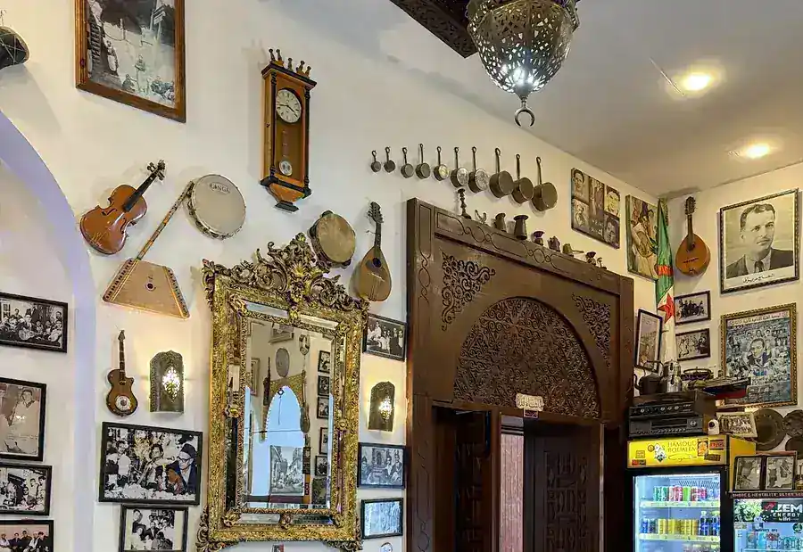
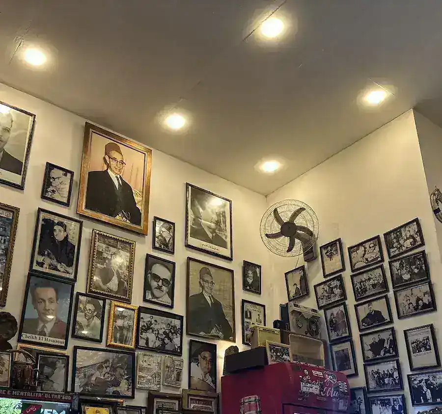
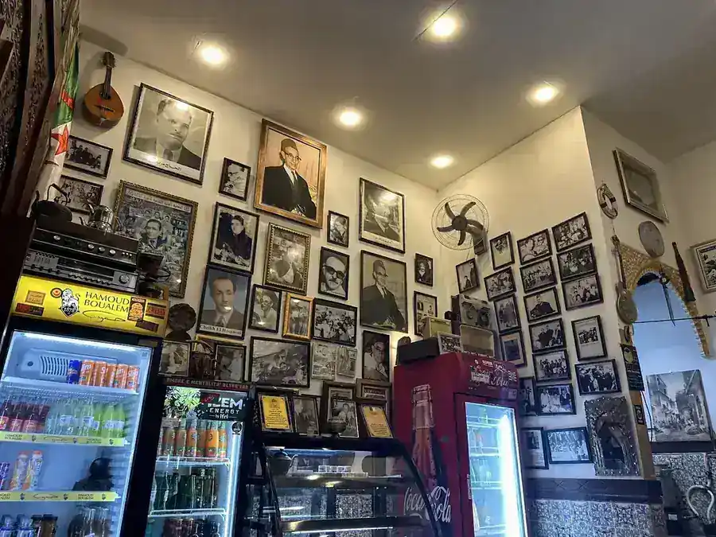
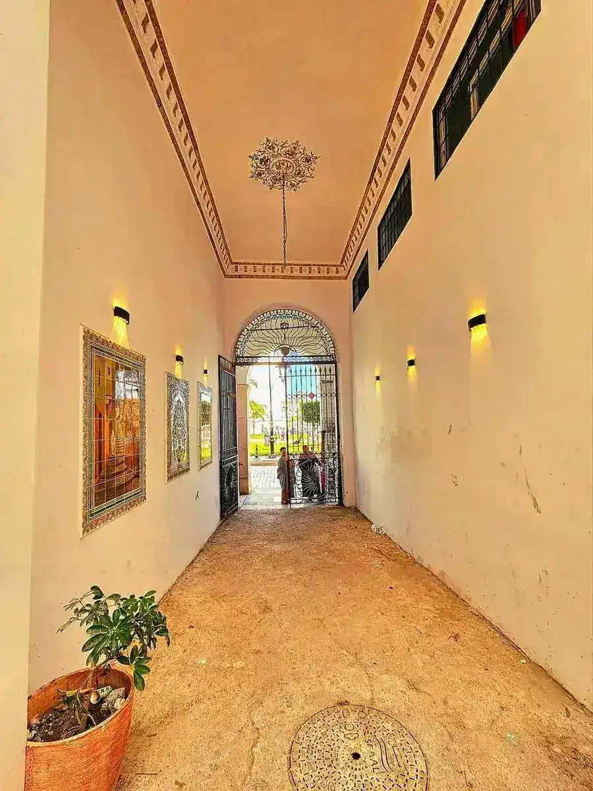

Café
Malakoffقهوة
مالاكوف
Le café mythique de la basse Casbah, où El Anka, M’rizek et El Ankis se retrouvaient chaque soir.القهوة اللي كان يتلاقاو فيها العنقا، امريزق والعنقيس كل ليلة، في قلب القصبة السفلى.

Témoin de l’âge d’or du chaâbiشاهد على الزمن الذهبي تاع الشعبي
Par la rue de Bab El Oued, au cœur de la basse Casbah, le Café Malakoff est l’un des lieux les plus chargés d’histoire d’Alger.من طريق باب الواد، في قلب القصبة السفلى، قهوة مالاكوف من أكثر البلايص اللي فيها تاريخ في الدزاير.
Dans les années 1950 et 1960, les grands maîtres du chaâbi s’y donnaient rendez-vous chaque soir : Hadj M’rizek, El Hadj M’hamed El Anka, Titiche, Boudjemaa El Ankis, Mohamed Gamba… Les jeunes de la Casbah venaient y apprendre auprès des cheikhs. Le café a aussi servi aux moudjahidine de la Zone autonome d’Alger.في الخمسينات والستينات، كبار شيوخ الشعبي كانو يتلاقاو فيه كل ليلة: الحاج امريزق، الحاج امحمد العنقا، تيتيش، بوجمعة العنقيس، محمد قامبا… وشباب القصبة يجيو يتعلّمو من الشيوخ. والقهوة خدمت حتى المجاهدين تاع المنطقة المستقلة للجزائر.
Aujourd’hui, les murs racontent encore cette époque : photos jaunies des chanteurs, mandoles, objets souvenirs et images du vieil Alger. On s’y assoit pour un thé à la menthe ou au citron, dans le calme et la fraîcheur d’une belle bâtisse en pierre.اليوم، الحيوط مازالهم يحكيو على ذاك الزمان: تصاور الشيوخ، المندولات، التحف وصور الدزاير القديمة. تقعد تشرب أتاي بالنعناع ولا بالقارص، في الهدوء والبرودة تاع دار قديمة بالحجر.
Les murs racontentالحيوط يحكيو





Ce qu’en disent les visiteursواش يقولو الزوّار
« Un café historique et mythique de la basse Casbah, jouxtant la fameuse place des Martyrs, chargé de souvenirs. Des soirées sont organisées en été et durant le Ramadan. »«قهوة تاريخية وأسطورية في القصبة السفلى، لاصقة في ساحة الشهداء، معمّرة بالذكريات. وكاين سهرات في الصيف وفي رمضان.»
Local Guide · avis Googleمرشد محلي · تقييم Google« Café en pleine place des Martyrs, calme et frais, dans une belle bâtisse en pierre. Décor rustique et antique. C’est juste magnifique. »«قهوة في ساحة الشهداء، هادية وباردة، في دار مليحة بالحجر. ديكور قديم وأصيل. بصّح روعة.»
Client · avis Googleزبون · تقييم Google« Un endroit authentique, riche d’histoire, une architecture unique, un endroit chaâbi. Je recommande si vous êtes de passage. »«بلاصة أصيلة، فيها التاريخ، معمار ما كانش منو، بلاصة شعبية. ننصح بيها إذا راك فايت.»
Client · avis Googleزبون · تقييم GoogleAu cœur de la Casbahفي قلب القصبة
Horairesالأوقات
Horaires à confirmer avec le café ; ils seront affichés ici à la mise en ligne.الأوقات يتأكدو مع القهوة ويتحطّو هنا وقت التفعيل.
Nous trouverالعنوان والاتصال
Un thé au Malakoff ?أتاي في مالاكوف؟
Basse Casbah, à deux pas de la place des Martyrs.القصبة السفلى، قريب من ساحة الشهداء.